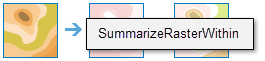
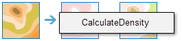
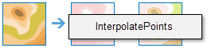
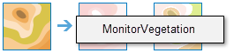
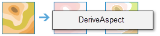
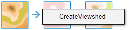
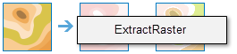
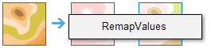
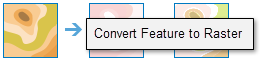
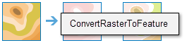

Analiza raster vă permite să efectuaţi analiza seturilor de date raster mari cu ajutorul ArcGIS Image Server. Aceasta vă permite să analizaţi mai multe date mai rapid prin folosirea puterii serverului. Seturile de instrumente disponibile în mod curent prin experienţa de utilizare web Portal for ArcGIS sunt Sumarizare date, Analiză modele, Analiză imagine, Analiză teren şi Administrare date.
Acest set de instrumente conţine un instrument pentru a calcula statistici pentru un strat tematic raster aflat între limitele pe care le definiţi.
Rezumare raster în cadrul |
 |
Calculează statistici rezumate pentru celule raster din suprafeţele definite.
Printre exemplele de aplicaţii se numără următoarele:
Aceste instrumente vă ajută să identificaţi, cuantificaţi şi vizualizaţi modele spaţiale din datele dvs.
Calcul densitate |
 |
Analiza densităţii ia cantităţi cunoscute ale unui fenomen şi creează o hartă de densitate prin răspândirea acestor cantităţi pe hartă. Puteţi utiliza acest instrument, de exemplu, pentru a afişa concentraţiile de fulgere şi tornade, accesul la instituţii de sănătate, cât şi densităţile populaţiei.
Interpolare puncte |
 |
Acest instrument vă permite să preziceţi valori în locaţii noi pe baza măsurătorilor găsite într-o colecţie de puncte. Instrumentul ia date punctuale cu valori în fiecare punct şi returnează suprafeţe clasificate în funcţie de valorile prezise. Puteţi utiliza acest instrument, de exemplu, pentru a prezice nivelurile precipitaţiilor dintr-un bazin hidrografic pe baza măsurătorilor efectuate în staţii individuale.
Instrumentul de mai jos vă ajută să analizaţi imagini.
Aplică şablon funcţie raster |
Procesează imaginile dvs. cu lanţul de funcţii specificate de şablonul pentru funcţia raster.
Monitorizare vegetaţie |
 |
Efectuează o operaţie aritmetică a benzilor unui strat tematic raster cu benzi multiple pentru a afişa informaţiile privind acoperirea vegetaţiei în zona de studiu.
Aceste instrumente vă ajută să analizaţi suprafeţele raster.
Calculare pantă |
Identifică o suprafaţă care indică panta datelor de elevaţie de intrare. Panta reprezintă rata de modificare a elevaţiei pentru fiecare celulă a modelului digital de elevaţie (DEM).
Derivare aspect |
 |
Identifică direcţia în pantă a ratei maxime de schimbare a valorii din fiecare celulă către vecinii săi. Aspectul poate fi considerat direcţia pantei.
Creare rază vizuală |
 |
Determină locaţiile de pe o suprafaţă raster care sunt vizibile unui set de observatoare.
Aceste instrumente sunt utilizate atât pentru administrarea de zi cu zi a datelor geografice, cât şi pentru combinarea datelor înainte de analiză.
Extragere raster |
 |
Extrageţi celule dintr-un în baza valorii, formei sau extinderii unui set de date diferit.
Recartografiere valori |
 |
Schimbaţi valorile de celule individuale sau intervalurile de valori de celule la valori noi.
Convertire obiect spaţial în raster |
 |
Creaţi un nou set de date raster dintr-un set de date de obiecte spaţiale existent.
Convertire raster în obiect spaţial |
 |
Creaţi un nou set de date de obiecte spaţiale dintr-un set de date raster existent.